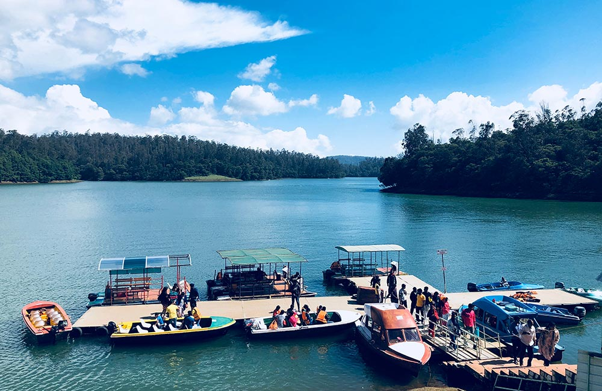

A quaint hill town, perched against the
backdrop of Doddabetta (2,637 m), the
highest peak in the Nilgiris, Ootacamund,
in Tamil Nadu, is lined with traditional
and colonial-style buildings, which make
it the perfect fusion of the new and the
old. Clear blue skies, lush green hills,
deep verdant valleys and pleasant weather
culminate to make this gem of the Nilgiris
(Blue Mountains) one of the most attractive
tourist destinations in South India.
Such is the renown of its beauty that it is
popularly referred to as the 'Queen of Hill
Stations' and the 'Switzerland of India'.

About Tour
Day 1:
Doddabetta Peak
Stone House
St. Stephen's Church
Rose garden
Toy Train Ooty
Day 2:
Ooty Lake
Kalhatti Falls
Pykara waterfalls
Needle Rock View Point